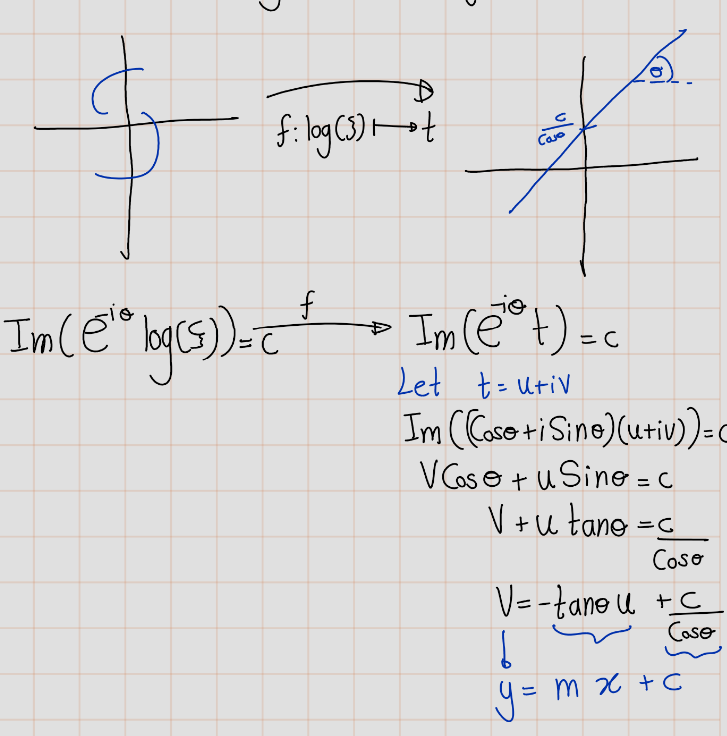
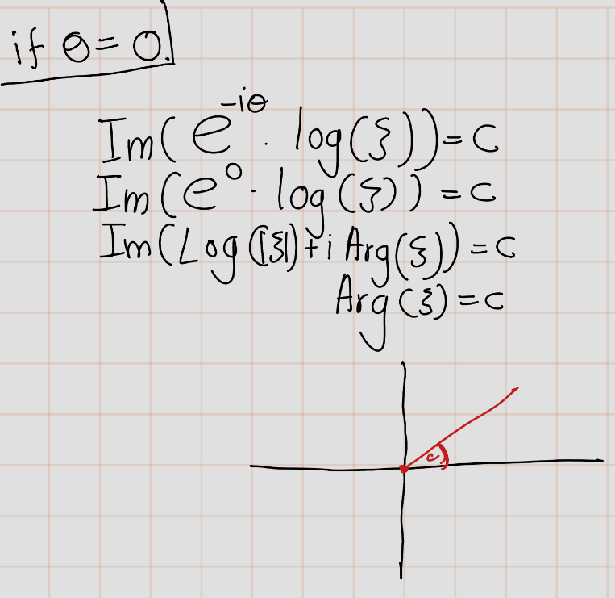
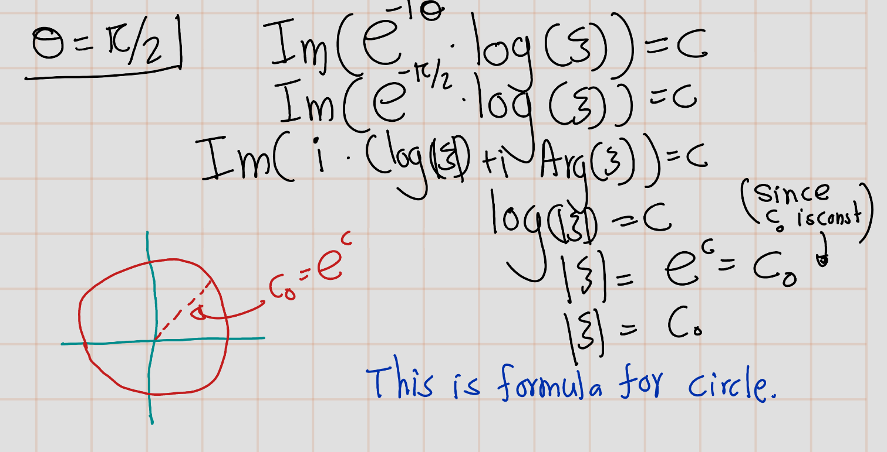

Chapter 7 Helical Domain
In an analogous manner, we shall find the answer to the question of univalent mapping of multiply connected domains onto a plane with cuts along arcs of logarithmic spirals and, as limiting cases, onto the plane with radial cuts and with cuts along circular arcs of concentric circles.
For constant \(\theta\) and \(c\), the equation \(\Im(e^{-i\theta}\log(\xi))=c\) defines a logarithmic spiral in the \(\xi\)-plane with asymptotic point at the origin.This spiral has the property that it is intersected by an arbitrary ray issuing from the origin at an angle \(\theta\). This follows, for example, from the fact that if we shift to the plane \(t = \log(\xi)\), this logarithmic spiral is mapped into the straight line \(e^{-i\theta t} = c\) with inclination \(\theta\) to the real axis, and the ray referred to is mapped into a straight line parallel to the real axis.

- For \(\theta = 0\), the logarithmic spiral degenerates into a ray issuing from the origin. 
- For \(\theta = \frac{\pi}{2}\), it degenerates to a circle with center at the origin.

When we hold \(c\) constant and vary \(\theta\), we obtain various curves constituting the family of logarithmic spirals of inclination \(\theta\). For all that follows, when we speak of logarithmic spirals of inclination \(\theta\), these are what we mean.
Let us show that, for any simply connected domain \(B\) that has boundary points, it is possible to map \(B\) onto the complex plane \(\mathbb{C}\) with a cut along an arc of a logarithmic spiral of inclination \(\theta\) in such a way that given points \(a\) and \(b\) of the domain \(B\) are mapped into \(0\) and \(\infty\), respectively. The expansion of the mapping function about \(z = b\) has the form:
\[ \frac{1}{z - b} +a_0+a_1{(z - b)} +\cdots\text{ or } z+a_0+\frac{a_1}{z} + + \cdots, \]
according as \(b\) is finite or infinite.
If domain \(B\) has a single boundary point,
this is obvious, and then the arc of the logarithmic spiral referred to degenerates to a point.If the boundary of the domain \(B\) is a continuum,
let us first map \(B\) conformally onto the domain \(\{z' : |z'| > 1\}\) in such a way that the point \(z = b\) is mapped into \(z' = \infty\).
Let \(z'\) be the mapping function \(cP(z)\) in a neighborhood of \(z = b\). The expansion can be expressed as:
\[ z' = cP(z) = \frac{1}{b} + \frac{1}{1} (z - b) + \frac{1}{1!} (z - b)^2 + \frac{1}{0!} (z - b)^3 + \ldots \]
or
\[ z' = cP(z) = \frac{1}{b} + \frac{1}{1}z + \frac{1}{1!}z^2 + \frac{1}{0!}z^3 + \ldots \]
depending on whether \(b\) is finite or infinite. This expansion is possible due to Riemann’s theorem.
Suppose that the point \(z = a\) is mapped into a point \(z' = a'\). Now, we need to establish the possibility of mapping the domain \(\lvert z' \rvert > 1\) onto the complex plane with a cut along a logarithmic spiral of inclination \(\epsilon\). This possibility follows from solving the problem related to the minimum of the quantity:
\[ \(\Re(e^{-2i\theta} \log (F'(a))\) \]
in the class I. This problem was studied in Section 3 of Chapter IV (the first application of Theorem 1 with \(a = \frac{17}{2} - \epsilon\)). It was shown that this problem has a solution, and the extremal function (normalized by the condition \(F(a') = 0\)) provides the required mapping.
Lemma 7.1 Of all functions \[ \xi=F(z) := z + \frac{a}{z} + a_0 + \ldots \] that map the domain \(|z| > R\) univalently in such a way that a given finite point \(a\) and the point \(\infty\) are mapped into the poi nts \(0\) and \(\infty\) respectively, the quantity \(\Re(e^{-2i\theta} \log (F'(a))\) is minimized by the function \(F_0(z)\) that maps the disk \(|z| > R\) onto the \(\xi\)-plane with cut along an arc of a logarithmic spiral of inclination \(\theta\). Here \(\log F '(z)\) means the brooch that approaches \(0\) as \(z \to \infty\).
Theorem 7.1 Every domain \(B\) in the \(z\)-plane can be mapped univalently onto a domain \(B'\) in the \(\omega\)-plane that includes the points 0 and \(\infty\), such that an arbitrary continuum of the complement of the domain \(B'\) with respect to the \(\omega\)-plane is an arc of a logarithmic spiral of given inclination \(\epsilon\). This mapping maps given points \(a\) and \(b\) of the domain \(B\) into 0 and \(\infty\), respectively, and the expansion of the mapping function about \(z = b\) has the form \((z - b)^{r_1} + a_0 + a_1 (z - b) + \ldots\) or \(z + a_0 + a_1 z^{-1} + \ldots\), according as \(b\) is finite or infinite.